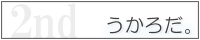
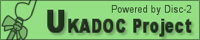
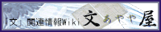
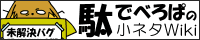
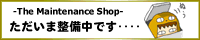

期間限定/お知らせ
![[別サイト等]](image/window.gif) Ghost Jam 2026
Ghost Jam 2026
1週間のタイムリミット内でゴーストを開発して公開する企画
6/19 01:00:00～6/25 00:59:59
伺かゴースト感想会
自分以外の参加者のゴーストを起動して感想を書く感想交換会/ゴーストを起動さえできれば誰でも参加可
参加表明～6/25 開催7/1～7/25
あなたの愛するゴーストを教えてください！ 企画説明
伺か全般(自作じゃなくてもよい、ゴーストでなくてもよい)についての愛を自由に語る/描く(手段も自由)企画
1/1～6/30 #愛ゴ2026(X) #愛ゴ2026(Fed)
常設企画
ゴロリとワクワク
ゴーストにロリィタとかのkawaii服を着てもらうとワクワクするよね企画
期間指定なし #ゴロリとワクワク参加絵
終了済(配布/公開中)企画
この子どこ
さくら
どっとさくら(非公式)
おすすめ追加シェル(見た目)：水色さくら
まゆら
JUNKER'S HIGH オフィシャルショップ
ちゃんと公式です。Youtubeもぜひ：JUNKER'S HIGH
ソーシャル
Twitter : #伺か OR #ukagaka
Mastodon/Fediverse : #ukagaka
伺かのDiscord
Discord for 伺か (雑談寄り？)
伺的なオンラインイベント
臨時イベント会場
外部リンク
ninix-kagari
LinuxなどWindows以外の環境向けのベースウェア（ゴースト実行ランタイム）
うかぼーど
伺かリンク集
ghost-log
伺か関連手動更新ニュースサイト
うかフィード
伺か関連ニュース投稿サイト
Ukagaka Dream Team Wiki
英語メインの伺かコミュニティポータル
『伺か』を始めてみたい人のための簡易リンク集
とりあえずはじめに
ゴーストキャプターさくら
ゴースト更新情報リスト(自動)
ゴースト回覧板(3rd)
伺か関連スレッドフロート型掲示板

うかろだ。2nd
伺か関連アップローダ
GHOST TOWN / BALLOON TOWN
手動編集式ゴースト検索DB
伺的な感想やレビューのWiki
ゴーストレビュー
直営
伺的お絵かき/投稿集会所
懐かしい？お絵かき掲示板
SSPヘルプ
SSPのつかいかた
うかどん
Mastodon for 伺か
SundayFish / FA-X
SUN-A-LIGHT / Traveler Joe
nanika.jpのドメイン管理状況が不明のため、以上の通りshillest.net以下に収容しています。
ですくとっぷますこっとっぽい？
ぶいなものたち
-
宇推くりあ ロケット工学アイドルVtuber 🚀🔥 ぽなの私物化枠1
-
宇佐木そら うさうさお歌アイドル 🐰🥕💖 ぽなの私物化枠2
-
Clear∅Sky 上2人のアイドルユニット ☀️🌟 ぽなの私物化枠1.5
|
はじめに
←左欄やここに何か載せたい方、その他ご要望は、下記までご連絡ください。
ソーシャル
偽SoSiReMi
GitHubで配布されている伺か関連ファイルまとめ
偽SiReFaSo
GitHubで開発されている伺か関連プロジェクト更新検知 設定方法
ゴーストが作りたい
Discord for 開発寄り伺か
外部リンク
ゴースト開発の質問・交流については、うかどんやDiscordでもよく行われています。そちらもご覧ください。
コヨーテ小屋→ゴーストを作ろう！
初心者向けのやさしい開発ヒント
基本的に物置き→はじめてのゴーストの作り方
実際に動くゴーストの製作体験ページ
ななろだ・さとりすと
ゴーストアップローダ・里々向け統合開発環境
伺的なフォーラム
相談質問用フォーラム
ねりろぐ
創作活動応援サイト：「伺か(SSP)」カテゴリ必見
freeshell Wiki
伺かゴースト新規開発向け立ち絵(シェル)紹介
キャラクターなんとか機
自由に立ち絵のパーツを組み合わせてシェルを創るソフト 拡張データ
CROW・SSPリファレンス
開発者による仕様メモ [旧] => ukadocへ
大八洲.NET データベース
一部の仕様の詳細なまとめ [旧] => ukadocへ
直営

ukadoc project
仕様書書きプロジェクト
大規模移転対策URL置換データ報告フォーム
ゴーストの公開サイト移転の報告にご協力を

文屋(AYAYA)
SHIORI"文"の仕様とTips
伺か開発情報検索
開発情報に特化したカスタム検索

駄でべWiki
開発メモ集積所

整備班
ゴースト開発・メンテプロジェクト
鎮守府の不可思議な日常
艦これゴースト用開発サイト
SSP BUGTRAQ サービス運用状況
ぽなのおにくせいかつ：雑メモ
おまけ
四月馬鹿 2003 2004 2005 2006 2007 2008 (2009=改装) 2010 2011 2012 2013 2026
SSP BUGTRAQへようこそ！
あなたは 番目の訪問者です。
キリ番は好きなだけ踏み逃げしてください。
|